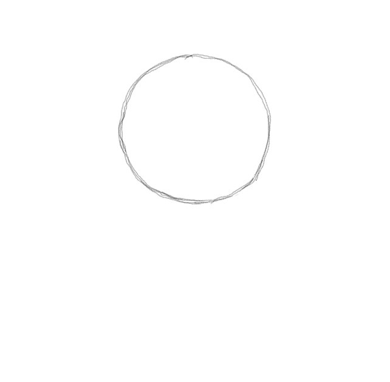
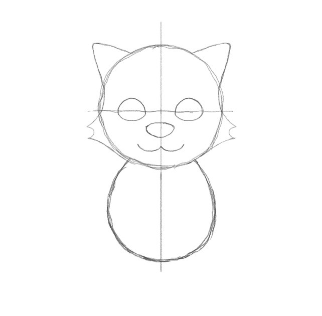
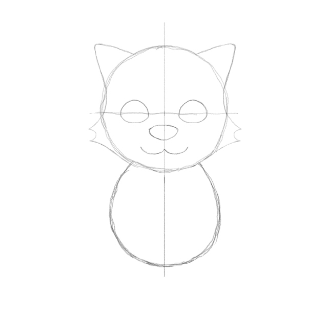
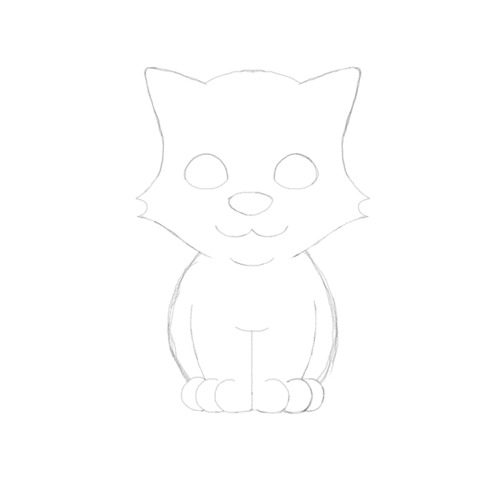

you can be cat too. listen...

Start with a circle. Unless you're weird you're not gonna draw it perfectly the first time. You'll notice mine is a bit scribbly because I drew over my initial circle a few times until it looked right. Make sure there's room underneath for the body later.
TOP TIP: Draw lightly. This allows you to erase not just mistakes, but construction lines, which you'll be doing next...

Draw a line down the middle of the circle and keep going beyond the circumference, as you'll be needing it to help you draw the body. Also draw a horizontal line roughly halfway across the face.
After that, draw an egg. Try and make the top of the egg overlap the head slightly, and keep the line you just drew centered in the middle.

Look at a picture of a cat's face, and you'll notice some things about its mouth, nose and eyes. I've tried to simplify them here. Use the construction lines to help you be symmetrical, although it doesn't have to be perfect. True symmetry is unnatural! You can erase the overlapping egg to help you see what you're drawing.

This part is tricky and you'll probably feel more comfortable approaching it your own way. Buuuuuuuut... try to align the fluffy cheeks with the nose and mouth, then curve the shape of the head inside the circle, before coming up to the ears.
A lot of this circle will be erased so don't feel like you have to make everything work with the circle, it's mostly there to help the cat keep its form.

Erase parts of the circle and construction lines you no longer need. I hope you drew them lightly! Erase the bottom part of the circle and draw your own chin for kitty.

Let's do legs! We're going to keep the bottom half of the construction line to separate both legs. Erase any part of the body that overlaps and try and make the paws as round and squishy as possible.

Back legs! Since the cat is sitting, you'll need to draw two lovely curves jutting out on both sides. When drawing the paws this time, make them sit slightly above the front paws
And now draw the rest of the cat. Do what you like with the tail, make the eyes look anywhere, do some nice swishes for the whiskers. And we're done!